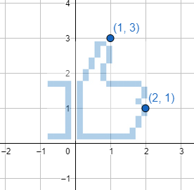

Gráfico de funciones
- Se llama gráfico de $f(x)$ a la colección de puntos $(x,f(x))$.
- Toda función tiene un gráfico asociado.
- No todos los gráficos representan funciones.
¿Qué pasa al intercambiar las coordenadas en el plano?
- Ejemplo: $(1,2)$ pasa a ser $(2,1)$
- Ejemplo: $(3,3)$ pasa a ser $(3,3)$
- Para un conjunto de puntos se comporta como rotación de 90° del gráfico, junto con una reflexión horizontal.
- Al aplicarlo en gráficos de funciones el resultado a veces no corresponde con el gráfico de función.
